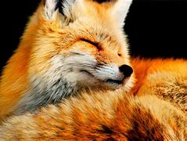

Raposas são pequenos a médios mamíferos onívoros pertencentes a vários gêneros da família Canidae. As raposas têm o crânio achatado, orelhas triangulares verticais, focinho pontiagudo e ligeiramente arrebitado e uma cauda longa e espessa.
 imagem.raposaRaposa ou rabosa têm origem do Latim rapu- (rabo), que nela é bem desenvolvida e peluda, possível vê-la de longe. Já golpelha é derivado de vulpicŭla-, diminutivo de vulpes, raposa em Latim.
Saiba Mais